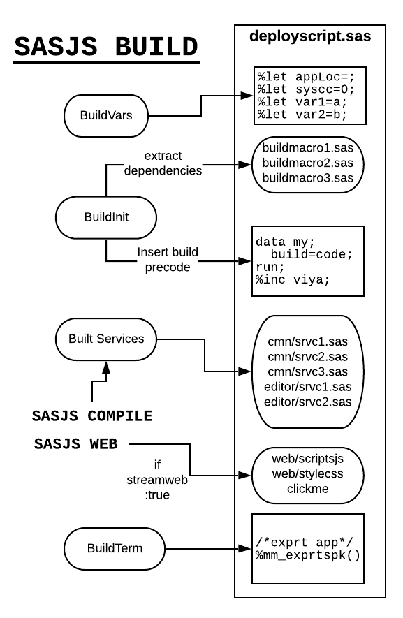

sasjs build¶
For ease of project deployment, sasjs build brings all the compiled Jobs / Services / Tests together into a single file. Actually, 3 files, as follows:
sasjsbuild/target.json- used to deploy using the APIs in Viya or SASjs Serversasjsbuild/target.json.zip- used for faster uploads of large payloads in SASjs Serversasjsbuild/target.sas- used to create the project in SAS 9 or Viya (when no access token is available)
The filename corresponds to the target name unless buildOutputFileName is specified.
Syntax¶
sasjs build takes one option:
| Option | Alias | Description |
|---|---|---|
--target |
-t |
The target whose configuration drives the build. Defaults to the defaultTarget in sasjsconfig.json. |
Examples:
Nothing else is passed on the commandline: the artefact name, the folders and any streamed web content all come from the target's configuration - see sasjsconfig. To run the compile step and the build step together, use sasjs cb; to add the deployment, sasjs cbd.
If a jobs or services folder does not exist in the temporary sasjsbuild folder, then the sasjs compile step is also executed. The alias to run both compile and build steps is sasjs cb.
The benefit of having a seperate command to prepare the build artefacts (rather than bundling it into sasjs compile) is that you can then modify the compiled outputs to ensure you have the build you want - for example, removing tests for a production deploy. If you don't need such changes, then you can just run sasjs cb as a shortcut for both sasjs compile and sasjs build.
Target.JSON Build Artefact¶
The JSON file is used by the sasjs deploy command for the SASVIYA serverType to create all the necessary folders, jobs, services & tests (and streamed web apps) in the target appLoc.
Target.json.ZIP Build Artefact¶
This is simply a zipped version of the target.json file, and is used when uploading apps or deploying projects to SASjs Server.
Target.SAS Build Artefact¶
The generated SAS program can be executed directly in SAS 9 or SAS Viya to create all the jobs/services/tests programmatically. This is especially useful for Viya developers who are unable to obtain a client / secret. For SAS 9 it is the primary deployment method.

SAS 9 Build Script¶
The SAS 9 Build Program can be executed in EG or SAS Studio, and also automatically as part of sasjs deploy when deployServicePack is true. You just need to have a runner in your metadata home directory, and to provide credentials using sasjs auth.
Viya Build Script¶
The .sas file can be executed in SASStudioV without modification as proc http will use the oauth_bearer=sas_services option to authenticate to the APIs. This is the way to deploy SASjs projects when you do not have a CLIENT or SECRET.
Running Viya Build Script in Non-Viya-Enabled SAS sessions¶
If for some reason you need to run the Viya build script in a non SPRE / Viya-enabled session (eg in SAS 9 or SASjs Server) you will need to prepare the access token - see guidance here: https://cli.sasjs.io/faq/#viya-token-macros
Put this access token in a macro variable called ACCESS_TOKEN and it will be used by proc http in the core macros by reference to the access_token_var= keyword parameter of each viya macro (the ones that start with mv*).
Warning
Saving security tokens in project repositories, especially if they are committed to source control, is a security risk - as anyone with access can use them to make modifications on the Viya platform. If you are running Viya code in non Viya-enabled SAS environments using the ACCESS_TOKEN approach described above, be sure to use a secure mechanism such as %inc from a secure directory, or another approved mechanism for securing these kinds of variables. Avoid writing Access Tokens to log files.
Browser build (streamConfig.mockWeb)¶
Setting mockWeb to true makes sasjs build produce a second artefact: a self-contained static site whose backend runs in the browser. The same services run, the same webout and header contract applies, and there is no server, no SAS and no network in the path. It exists so an app whose services are JavaScript can be hosted on any static host - a demo, a review environment, a shared link - and still behave like a deployed SASjs app.
"streamConfig": {
"webSourcePath": "../client/dist",
"mockWeb": true,
"mockWebFolder": "sasjsbuild/mock"
}
mockWeb is independent of streamWeb: the same target still deploys for real, so one config serves both the browser build and a normal sasjs deploy.
Requirements¶
- the target's services must be JavaScript - typically the
mocksproject pattern, wheresas/mocks/sasjs/servicesholds.jsprograms. A target that compiles.sascannot be built for the browser, and the build says so webSourcePathhas to point at the built frontend (distby default); the site is assembled from that folder- the target's
appLochas to match the appLoc the frontend was built with, because the services are resolved from it
What the build produces¶
The site is written to mockWebFolder, sasjsbuild/mock by default. It contains the frontend, the compiled JavaScript services, a service worker and the small runtime that executes them. The virtual drive the services see is seeded from the build output - the same files sasjs compile wrote, plus anything syncFolder copied in - so a service reading services/... or a data file finds it without any upload step.
How it runs¶
A service worker intercepts the calls the SASjs Adapter makes, invokes the matching JavaScript service, and resolves webout, log and headers back to the app. Requests appear in the browser's network tab as they normally would. Anything the services write to the drive is kept in IndexedDB, so a page refresh does not lose it.
Downloads and file responses¶
A service answers with a file the same way it does on a server: it declares the response in _SASJS_WEBOUT_HEADERS and writes the body where the wrapper points it. The generated wrapper already declares fs, so a service uses it rather than requiring it again.
For text - a CSV, a DDL script, a log - assign _webout (or write the string to weboutPath):
fs.writeFileSync(
_SASJS_WEBOUT_HEADERS,
'Content-type: text/csv\nContent-Disposition: attachment;filename="users.csv"'
)
_webout = 'id,name\n1,Ann\n'
For bytes - a zip, an xlsx, an image - write them to weboutPath as a Buffer or a Uint8Array:
fs.writeFileSync(
_SASJS_WEBOUT_HEADERS,
'Content-type: application/zip\nContent-Disposition: attachment;filename="pack.zip"'
)
fs.writeFileSync(weboutPath, Buffer.from(zipBytes))
Buffer.from() takes bytes, an array of numbers, or a base64 string with 'base64' as the second argument, so a library that produces base64 needs no extra step. This is the browser counterpart of %mp_streamfile - the same two writes - and the browser offers the response under the name in Content-Disposition.
Only Content-type and Content-Disposition are applied; any other header is ignored, because a static host has no cache to control and no cookies to set. A request made with _debug returns the text frame instead, since its body is the webout wrapped in the log.
Some things to keep in mind:
- the drive holds text, so a file a service writes as bytes is stored as base64 and reads back as bytes - it is a demo drive, not a filesystem for large binaries
- with no
Content-typedeclared, a byte body is served asapplication/octet-stream - a filename outside ASCII belongs in RFC 6266 form -
Content-Disposition: attachment;filename*=UTF-8''r%C3%A9sum%C3%A9.csv. Raw non-ASCII bytes in a header are not portable: the browser's own download honours the bytes it is given, and the same header sent by a SASjs Server arrives with node's latin1 encoding, so the two only agree on the ASCII form
Serving it¶
Serve the folder over http or https. A service worker needs a secure context, which means localhost and https both work but file:// does not:
Deploy it like any static site - it is just files. The runtime files under host/ are referenced with a ?v=<hash> query that changes with their contents, so a redeploy replaces them for returning visitors too; upload index.html and sw.js together with everything else, since those two carry the reference.
Shipping the site with data¶
Out of the box the drive a visitor gets holds the services and whatever else lives in the build folder - enough to run, but empty of the data those services would have produced. A snapshot changes that: if mock-snapshot.json sits in the build folder, the build copies it to host/vfs-snapshot.json and the runtime prefers it over the plain seed, so every visitor starts from the captured state instead of an empty drive.
To capture one, open the site, use the app until the drive is in the state you want, and run this in the browser console:
That saves mock-snapshot.json to your downloads. Put it beside the compiled output - sasjsbuild/mock-snapshot.json for the default build folder - and build again. The build reports it in host/mock-config.json as "snapshot": true.
Three things worth knowing:
- the snapshot is a plain JSON map of drive path to file contents, and a real app's drive runs to megabytes, so treat it as a build input you generate rather than something to keep in git
- state stays tied to where it was captured. A licence issued for one origin does not decrypt on another, so capture the snapshot on the domain you deploy to - if an app asks to be licensed or configured after deployment while it worked locally, this is the usual reason
- to start over,
window.SASjsMock.reset()clears the persisted drive and reseeds from the shipped files; to ship the plain seed instead, removemock-snapshot.jsonfrom the build folder and build again
Warning
This is a single-user, no-authentication build. Services that read SAS tables, run macros or depend on SAS libraries cannot work in it, because there is no SAS engine in the browser. Treat it as a demo and review artefact, not as a replacement for a real deployment.